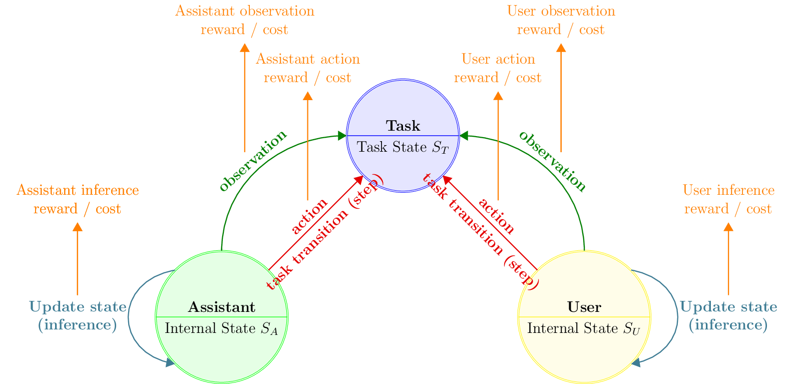
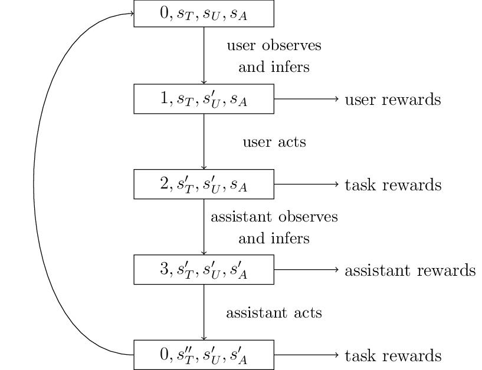

The Interaction Model
This library builds on the idea that the successful interaction between a human and a computer is in many cases a problem of cooperation.
Commitments and Assumptions
In designing the library, we made the following theoretical commitments:
Users go through states, which represent a given user context (e.g. a set of preferences or abilities that may evolve over time);
User observations can be incomplete and noisy;
Users are (imperfectly) rational, meaning they are assumed to be maximizing a utility function under certain constraints. In particular, user behavior is driven by scalar reward maximization;
Users may maintain internal models of their environment;
Systems may also, and will usually, benefit from maintaining internal models of the user;
Users and systems may adapt to each other;
Efficient system behavior can be attained by maximizing scalar rewards.
The result is a symmetric, stateful characterization of models of both users and artificial systems which have the ability to make observations, perform inferences and produce actions as a result.
User Assistance Model
At a high level, CoopIHC builds on a model of user assistance (See Figure), where a user and an assistant work together to drive a task toward a goal state:
A task is represented by a state \(s_T\). Accomplishing that task usually means driving the task state to a goal state.
A user, who wants to drive the task to a goal state, and can issue some actions.
An assistant, who is here to help (assist) the user drive the task state to a goal state, and can issue actions as well.
The model further assumes that the user and assistant act sequentially (one after the other).

Fig. 7 Model of user assistance
Both the user and assistant (generically referred to as agents) are fundamentally described by their ability to produce observations, make inferences and take actions:
They have an internal state (\(s_U\) and \(s_A\) for the user and assistant respectively), which may be used to store, for example, goals, preferences, model parameters.
They observe (perfectly or partially) the various states of the interaction model. When making an observation, the agents may receive a reward to model some positive or negative effects of observation; for example, observations may take some time to be created (negative reward) or may satisfy a curiosity (positive reward).
Based on these observations, agents make inferences that change their internal states. The agents again may receive a reward to account for situations where there is a cost (e.g. mental effort, computational resources) or a benefit (e.g. satisfaction) to inferring.
Based on their internal states and their observations, agents take actions as dictated by a policy. Those actions may have an effect on the other states (e.g. the task state) of the interaction model.

Fig. 8 Order of Sequential Operations
Note
The sequential nature of actions is not a strong assumption: simultaneous play can always be achieved by delaying the effect of one’s action to the other’s turn. It can also be argued that no real simultaneous play is ever possible.
Library Architecture
The model presented before rests on the ideas of agents with states, with abilities to make observations, perform inferences and take actions. The library integrates these ideas by giving and providing a simple and normalized way of expressing each of those components so that various components can be used interchangeably. The resulting architecture of the library is displayed below.
{kind=link}
Fig. 9 The general architecture of an interaction context in CoopIHC
Key components of the library are the following:
All states of the model, as well as the last actions produced by both agents are joined into a single game state;
Observations are produced by observation engines, applying some transformation to the entire game state.
Inferences are performed by inference engines, using the current agent’s internal state and observations as input.
Actions are taken by policies, using the current agent’s internal state and observation as input.
User and assistant actions make the task state transition to a new state. If the goal state is reached, the task finishes.
All these components may issue rewards, which are collected by both agents.
User, assistants and tasks are combined to a single object by a
Bundle. The interface of that object depends on how the bundle is instantiated (see below).
When using the library, you will need to specify states as well as observation engines, inference engines and policies. You can reuse existing components if available or implement your own.
Decision-Theoretic Models
The model of user assistance presented above can be formulated as a Partially Observable Stochastic Game (POSG). The POSG ia a very general model of decision making. It describes sequential decision making for multiple agents in a stochastic environment with imperfect observability. POSG simplify to many special cases (see Table 1 for some examples), including the well-known MDP.
This means that problems of interaction can be converted to generic decision making models, by using an appropriate Bundle, for which generic off-the-shelf solutions may already exist.
Observation |
Single-Agent |
Multi-Agent |
|
|---|---|---|---|
Perfect |
MDP |
MMDP |
same reward |
Markov Games |
different reward |
||
Imperfect |
POMDP |
Dec-POMDP |
same reward |
POSG |
different reward |